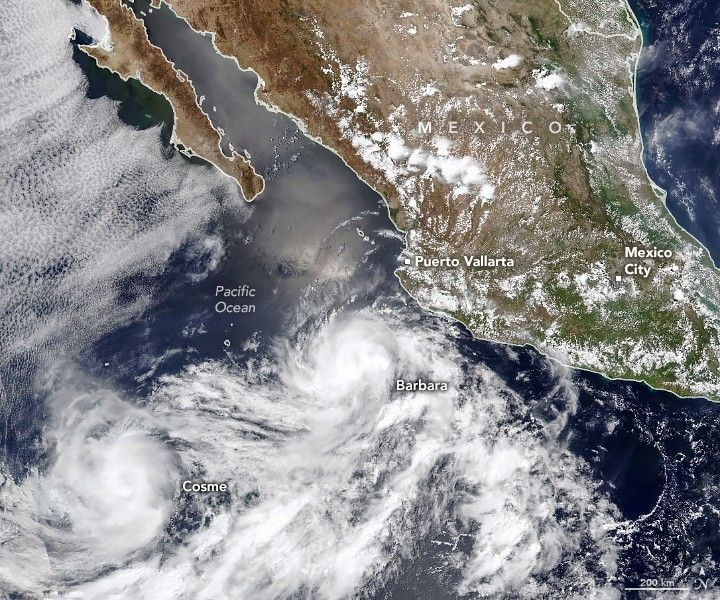

Storm Duo Churns Over the Pacific
Several weeks into the 2025 eastern Pacific hurricane season, a pair of tropical cyclones churned off the western coast of Mexico. The storms—Barbara and Cosme—are visible in this image, acquired on the afternoon (20:15 Universal Time) of June 9, 2025, by the VIIRS (Visible Infrared Imaging Radiometer Suite) on the NOAA-20 satellite.
Around the time of this image, Barbara was a Category 1 hurricane with sustained winds of about 120 kilometers (75 miles) per hour, according to the National Hurricane Center. The storm had intensified into a hurricane earlier in the day as it became more organized and formed a partial eyewall. Its run was short-lived, however, as it moved west-northwest over cooler water surfaces. It weakened to a tropical storm by the evening.
Meanwhile, Tropical Storm Cosme churned nearby with sustained winds of 110 kilometers (70 miles) per hour—close to but not quite hurricane strength—and remained near the hurricane threshold through the evening of June 9. Forecasters called for it to weaken over the next several days.
Both storms were moving away from Mexico’s mainland. While Cosme stayed well offshore and posed no hazards to land, Barbara was expected to produce dangerous swells and rip currents and deliver gusty winds to coastal areas.
Barbara was the first hurricane of the eastern Pacific hurricane season, which officially begins on May 15 and continues through November 30. However, tropical cyclones can occur outside this timeframe.